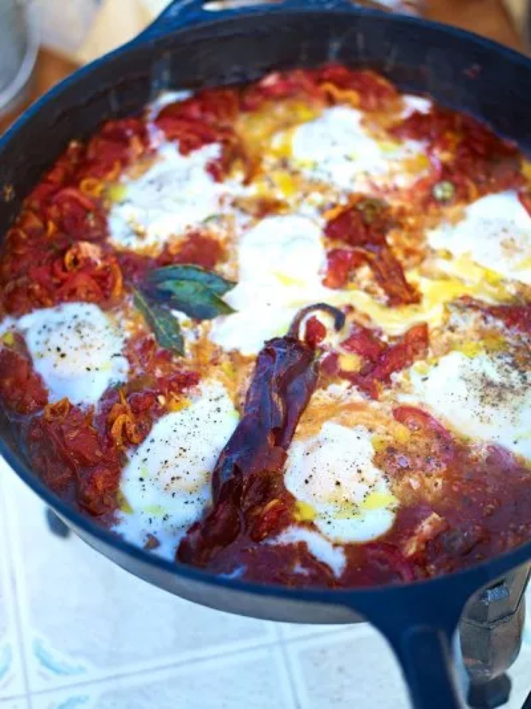

Huevos Rancheros

Before you start heat the oven to 160°C fan if you plan to warm the tortillas in it.
Ingredients
Method
- Peel and finely slice the 1 onion and 2 garlic cloves. Deseed and finely slice the 2 red peppers and 2 fresh chillies.
- Get a large frying pan (make sure you've got a lid to go with it) on a high heat and add several good lugs of olive oil.
- Add the onion, garlic, peppers, fresh and dried chillies, 3 bay leaves and a good pinch of sea salt and black pepper, and cook for 15 minutes, or until softened and caramelised, stirring regularly.
- Pour in the 2 x 400g tins of plum tomatoes, using a spoon or potato masher to break them up. Bring to the boil, then turn down to a medium heat and cook for a further 5 minutes to reduce the sauce.
- When you've got a nice thick tomato stew consistency, have a taste and adjust the seasoning, if needed.
- Slice the 2 large ripe tomatoes and lay them over the top of the mixture.
- Use a spoon to make small wells in the tomato stew, then crack in the 6 eggs so they poach in the thick, delicious juices – try to crack them in as quickly as you can so they all get to cook for roughly the same amount of time.
- Season from a height, put the lid on and let the eggs cook for around 3 to 4 minutes, or until cooked to your liking.
- Warm the 6 tortillas while this is happening. You can pop them into the oven at 160°C fan for a few minutes, microwave them for a few seconds or even lay them over the lid of the pan so they heat up as the eggs cook.
- Take the lid off and check your eggs by giving them a poke with your finger. When they're done to your liking, turn the heat off and take the pan to the table with the warmed tortillas, the Cheddar and a grater so everyone can get involved and make their own.
- Personally, I like to grate a bit of cheese right on to a warm tortilla, spoon an egg and some of the wonderful tomato stew on top, wrap it up, and eat it right away. What a beautiful way to wake up!